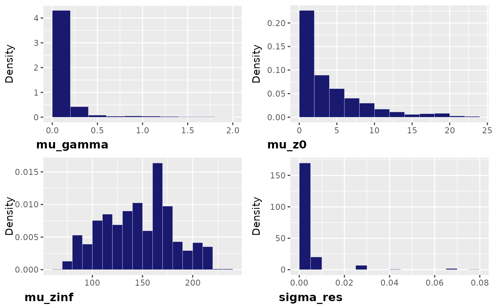

run growth models
run-growth-models.Rmd
library(Growth)Install nimble
If you never used the package nimble, you first need to
install it following recommendations here
Run a single model
The function Gro_run() allows to run one growth model.
This function takes as arguments:
-
xthe index of the formula to use -
datincluding at least the numeric columns Age, MeasurementValue and AnimalAnonID -
all_modsa vector of model names. The following models are supported : logistic, gompertz, tpgm, power, richards, vonbertalanffy. -
randomlist of the model names giving the parameters that should be included an individual random effect -
run: a list of Bayesian parameters includingnchnumber of chains,nthininterval between iterations to keep,nburninnumber of iterations to discard andnitertotal number of iterations. The default number of iterations is too small and need to be increased to reach convergence.
Only the model of index x will be used to run the
model.
The function returns:
-
modela list including estimates of coefficients and model characteristics -
taba data frame with information on model wAIC
age <- rnorm(10000, 0, 1)
id1 = rnorm(21,0, 0.5)
id2 = rnorm(21,0, 0.4)
id3 = rnorm(21,0, 0.3)
IND =sample(c(1:20), 100, replace = TRUE)
z <- 0.2+ id1[IND]+ (15 + id2[IND])* (1 - exp(-(1+ id3[IND]) * age)) +
rnorm(100, 0, 0.01)
dat = data.frame(age = age, z = z,
IND = as.numeric(factor(IND ,labels = c(1:length(unique(IND)))))
)
#Run a vonbertalanffy model including an individual effect on z0
out = Gro_run(1,
dat,
all_mods = c("vonbertalanffy"),
random = c("z0"),
run = list(nit = 500, nburnin = 100, nthin = 10, nch = 3))
#> nimble version 1.3.0 is loaded.
#> For more information on NIMBLE and a User Manual,
#> please visit https://R-nimble.org.
#>
#> Note for advanced users who have written their own MCMC samplers:
#> As of version 0.13.0, NIMBLE's protocol for handling posterior
#> predictive nodes has changed in a way that could affect user-defined
#> samplers in some situations. Please see Section 15.5.1 of the User Manual.
#>
#> Attaching package: 'nimble'
#> The following object is masked from 'package:stats':
#>
#> simulate
#> The following object is masked from 'package:base':
#>
#> declare
#> |-------------|-------------|-------------|-------------|
#> |-------------------------------------------------------|
#> |-------------|-------------|-------------|-------------|
#> |-------------------------------------------------------|
#> |-------------|-------------|-------------|-------------|
#> |-------------------------------------------------------|
#> [Warning] There are 1210 individual pWAIC values that are greater than 0.4. This may indicate that the WAIC estimate is unstable (Vehtari et al., 2017), at least in cases without grouping of data nodes or multivariate data nodes.
out$tab
#> model_type random index Nparam WAIC lppd
#> 1 vonbertalanffy z0 1 7 18831697 -35990.98Growth analysis: run multiple models
This function fits a series of growth models to a dataset, and select the best one by wAIC. It takes as arguments:
- data_weight including at least the numeric columns Age, MeasurementValue and AnimalAnonID
- all_mods indicating the growth models that need to be fit.The following models are supported : logistic, gompertz, tpgm, power, richards, vonbertalanffy. default = “vonBertalanffy”
-
randomlist of the model names giving the parameters that should include an individual random effect. See the example
Age <- sample(c(0:10), 1000, replace = TRUE)
MeasurementValue <- exp(0.2+15 * (1 - exp(-(0.1) * log(Age+1)))+ rnorm(1000,0,0.01))-1
AnimalAnonID <- sample(c(0:20), 100, replace = TRUE)
dat = data.frame(Age = Age, MeasurementValue = MeasurementValue,
AnimalAnonID = AnimalAnonID, MeasurementType = "Live Weight")
#Test 4 models: vonbertalanffy including an individual random effect on z0
# vonbertalanffy including individual random effects on z0 and zinf
# gompertz including an individual random effect on gamma
# gompertz including no individual random effect
a = Gro_analysis(dat, all_mods = c("vonbertalanffy", "gompertz"),
random = list(vonbertalanffy = c("z0", "z0, zinf"), gompertz = c("gamma", "")),
run = list(nit = 1000, nburnin = 100, nthin = 1, nch = 1))
#> * parallel has been set to FALSE, please wait more !
#> |-------------|-------------|-------------|-------------|
#> |-------------------------------------------------------|
#> [Warning] There are 1 individual pWAIC values that are greater than 0.4. This may indicate that the WAIC estimate is unstable (Vehtari et al., 2017), at least in cases without grouping of data nodes or multivariate data nodes.
#> |-------------|-------------|-------------|-------------|
#> |-------------------------------------------------------|
#> [Warning] There are 2 individual pWAIC values that are greater than 0.4. This may indicate that the WAIC estimate is unstable (Vehtari et al., 2017), at least in cases without grouping of data nodes or multivariate data nodes.
#> |-------------|-------------|-------------|-------------|
#> |-------------------------------------------------------|
#> [Warning] There are 33 individual pWAIC values that are greater than 0.4. This may indicate that the WAIC estimate is unstable (Vehtari et al., 2017), at least in cases without grouping of data nodes or multivariate data nodes.
#> |-------------|-------------|-------------|-------------|
#> |-------------------------------------------------------|Growth Model Setting
This function gets the parameter and equations for the growth model and takes as arguments:
-
data, a data frame including at least the numeric columns age, z and IND -
randomname of the parameters that must include an individual random effect -
modName of the model to fit. The following models are supported : logistic, gompertz, tpgm, power, richards, vonbertalanffy.
age <- rnorm(100, 0, 1)
z <- 0.2+ 15 * (1 - exp(-(1) * age)) +rnorm(100, 0, 0.01)
dat = data.frame(age = age, z = z,IND =sample(c(0:20), 100, replace = TRUE)
)
model <- Gro_ModSettings(data = dat, mod = "vonbertalanffy")Plot model prediction
This function gives the predicted values of the model and plots to check the convergence of the model. It takes as arguments:
-
dataincluding at least the numeric columns Age, MeasurementValue and AnimalAnonID -
outresult output namedmodelfrom Gro_run() or from Gro$analysis()
It returns the following object:
summaryshomwing mean, standard deviation, credible
interval at 95% and the Gelman-Rubin statistics Rhat of each parameter.
predictions giving the mean estimates and credible
interval at 95% of each age GOF: 4 tests of goodness of
fit: “normal”: test if residuals are normally distributes ; “X”; test if
there is a trend between residual and Age, “var”: Test if there is the
trend in the variance of the residuals over Age ,“conv”: check if all
Rhat < 1.1 * plot_pred Plot of the predicted values,
credible interval at 95% in grey and data points. *
convergence: Plots of the Bayesian chains *
posterior: Plots of the posterior distribution for each
parameter
Age <- sample(c(0:10), 100, replace = TRUE)
AnimalAnonID <- sample(c(0:20), 100, replace = TRUE)
MeasurementValue <- exp(0.2+15 * (1 - exp(-(0.1) * log(Age+1)))+
rnorm(100,0,0.01) + AnimalAnonID*0.1)-1
dat = data.frame(Age = Age, MeasurementValue = MeasurementValue,
AnimalAnonID = AnimalAnonID, MeasurementType = "Live Weight")
out = Gro_analysis(dat,
all_mods = c("vonbertalanffy"),
run = list(nit = 1000, nburnin = 100, nthin = 1, nch = 3))
#> * parallel has been set to FALSE, please wait more !
#> |-------------|-------------|-------------|-------------|
#> |-------------------------------------------------------|
#> |-------------|-------------|-------------|-------------|
#> |-------------------------------------------------------|
#> |-------------|-------------|-------------|-------------|
#> |-------------------------------------------------------|
#> [Warning] There are 88 individual pWAIC values that are greater than 0.4. This may indicate that the WAIC estimate is unstable (Vehtari et al., 2017), at least in cases without grouping of data nodes or multivariate data nodes.
p <- Gro_pred(data = dat,
out = out$model,
title =out$wAIC_tab$model[1])
#> Registered S3 methods overwritten by 'ggpp':
#> method from
#> heightDetails.titleGrob ggplot2
#> widthDetails.titleGrob ggplot2
p$summary
#> mean sd QI 2.5 QI 97.5 Rhat
#> mu_gamma 7.608254e-02 0.02689827 3.436972e-02 0.12994073 1.449363
#> mu_z0 2.357651e+00 2.82616140 1.842070e-02 9.81688657 1.067070
#> mu_zinf 1.870152e+02 53.50979304 1.165386e+02 312.84787536 1.385989
#> sigma_res 7.110652e-03 0.01486939 2.997295e-04 0.07523896 2.769497
p$predictions
#> # A tibble: 102 × 4
#> Age mean Conf_Int_low Conf_Int_up
#> <dbl> <dbl> <dbl> <dbl>
#> 1 0 2.36 0.0184 9.82
#> 2 0.1 3.64 1.36 10.9
#> 3 0.2 4.91 2.65 12.0
#> 4 0.3 6.17 3.89 13.2
#> 5 0.4 7.42 5.06 14.4
#> 6 0.5 8.66 6.19 15.7
#> 7 0.6 9.89 7.29 17.1
#> 8 0.7 11.1 8.42 18.2
#> 9 0.8 12.3 9.51 19.4
#> 10 0.9 13.5 10.6 20.5
#> # ℹ 92 more rows
p$GOF
#> $normal
#> [1] TRUE
#>
#> $X
#> [1] TRUE
#>
#> $var
#> [1] TRUE
#>
#> $conv
#> [1] FALSE
p$plot_pred
p$convergence
p$posterior